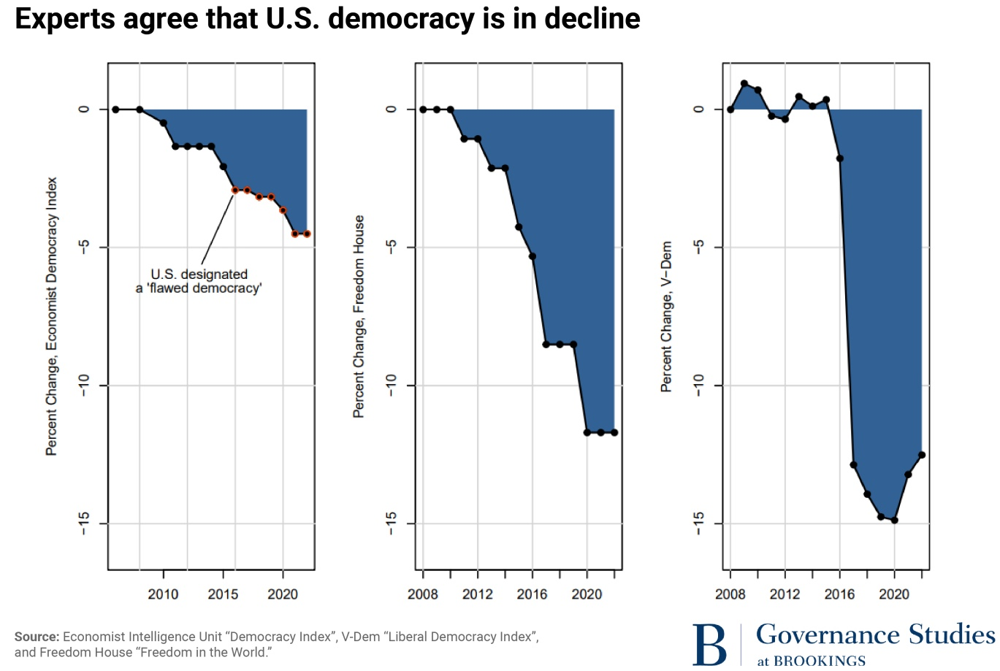
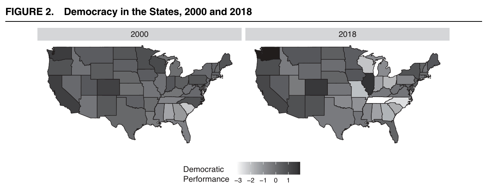
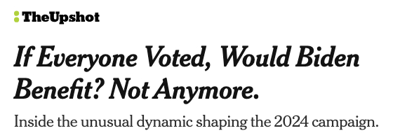
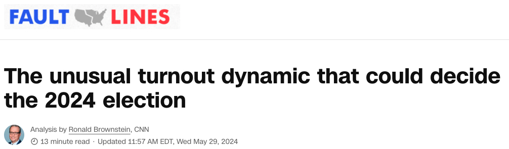

flowchart LR A[God/Nature] --> B[Government] B --> C[Rights]
Week 2: The Founding
This week
Monday: How did the U.S. come to have the Constitution and Bill of Rights?
Wednesday: Just how democratic are those documents?
Friday: Case study: voting rights
Monday: origins of the founding documents
Philosophical foundations
- Sovereignty
- Final authority over a territory (Hobbes)
- Where does sovereignty come from?
- Traditional view: God/Nature
- Locke: The social contract
- Rights
- Entitlements to do, be, or have specific things (or not to)
- Where do rights come from?
- Traditional view: Government
- Locke: God/Nature

Two conflicting frameworks
flowchart LR A[God/Nature] --> B[Rights] B --> C[Social contract] C --> D[Government]
Today: a century’s worth of grappling with these frameworks
1689: Locke’s Two Treatises of Government published
1776: U.S. Declaration of Independence
1791: First Congress ratifies the Bill of Rights
iClicker question
The agreement that citizens will consent to be governed so long as government protects their natural rights is called…
- the divine right of kings
- the social contract
- due process
- sovereignty
Prelude to revolution
1763: Seven Years’ War ends
1764-68: Sugar Act, Quartering Act, Stamp Act, Townshend Acts
1770: Boston Massacre
1773: Tea Act; Boston Tea Party
1774: Coercive Acts; First Continental Congress
1776: Second Continental Congress; Declaration of Independence
The Declaration of Independence
We hold these truths to be self-evident, that all men are created equal, that they are endowed by their Creator with certain unalienable Rights, that among these are Life, Liberty and the pursuit of Happiness. —That to secure these rights, Governments are instituted among Men, deriving their just powers from the consent of the governed, —That whenever any Form of Government becomes destructive of these ends, it is the Right of the People to alter or to abolish it, and to institute new Government, laying its foundation on such principles and organizing its powers in such form, as to them shall seem most likely to effect their Safety and Happiness.
Post-revolution
1781: Continental Congress ratifies Articles of Confederation; British surrender
1787: Constitutional Convention
1789: United States Constitution replaces Articles of Confederation
What went wrong?
The Articles of Confederation
- Confederation
- states have sovereignty, national government does not
- Unitary system
- national government has sovereignty, state governments do not
- Federal system
- both state and national governments possess sovereignty
Limitations and constraints on national government
- No imposition of taxes
- No regulation of trade
- No authority to raise an army
- Amending the Articles required a unanimous vote
Problems under the Articles
- Immediate financial struggles for the new country (war debt, access to credit)
- No consistent monetary system created significant instability
- Economic issues impacted the poorest people the most
Shays’ Rebellion, 1786
- Farmers (many war veterans who had not been paid [why?]) armed themselves and demanded debt forgiveness
- Massachusetts had trouble putting down the revolt (why?)
- Political and economic elites were (justifiably) panicked
iClicker question
For how long were the Articles of Confederation in effect?
- five years
- eight years
- twelve years
- nineteen years
The Constitutional Convention, 1787
The national government needed greater authority. But there were tensions:
- Small states vs. large states
- Slave states vs. free states
- Federal supremacy vs. state sovereignty
- Individual rights and freedoms vs. stability and order
Small states vs. large states
How should states be represented in the national government?
Large states (VA, MA, PA, etc.) wanted representation by population
Small states (NJ, RI, GA, etc.) wanted representation by state
Connecticut (Great) Compromise: bicameral legislature with proportional representation in the House of Representatives and equal representation in Senate; legislature has to pass both chambers; revenue bills must originate in the House of Representatives (why?)
Slave states vs. free states
How should enslaved people be counted?
- Southern states threatened to leave the Convention if the framers attempted to abolish slavery
- Larger population \(\rightarrow\) more power; 43% SC population enslaved
- Three-Fifths Compromise: enslaved population counted at 60% for both representation and taxation
[Slavery elsewhere in the Constitution]
- Article I: foreign slave trade abolished starting in 1808, but no restrictions on domestic slave trade
- Article IV: enslaved people could not gain freedom by escaping to free states and could be captured by enslavers (fugitive slave clause)
Federal supremacy vs. state sovereignty
How can states be assured of protection from federal tyranny?
- Separation of powers: executive, judicial, and legislative branches of the federal government each have authority over different areas
- Checks and balances: each branch is able to intervene in some ways on the others’ actions (not the same thing as separation of powers!)
“Separated institutions sharing powers” (Neustadt 1960).
Rights in the Constitution?
- Federalists: states already enumerated the rights of their citizens, so the Constitution didn’t have to — and probably shouldn’t
- Anti-federalists: the elastic clause could be weaponized to encroach on these rights in the future:
The Congress shall have Power… To make all Laws which shall be necessary and proper for carrying into Execution the foregoing Powers.
Bargain: the First Congress would consider a Bill of Rights
iClicker question
At the Constitutional Convention of 1787, the “Three-fifths Compromise” and the “Connecticut Compromise” both dealt with the issue of…
- amendments to the Constitution
- representation in Congress
- rights of the accused
- powers of the President
Closing thoughts
- The founding documents represented a revolutionary change in thinking about government…
- But they also drew from history and the examples of the states.
- Translating the notions of natural rights and the social contract into a workable system of government proved difficult.
For Wednesday
Read excerpts from Dahl, How Democratic is the American Constitution?
Wednesday: how democratic is the American constitution?
Another day, another political philosopher
“My aim in this brief book is not to propose changes in the American Constitution but to suggest changes in the way we think about our constitution.” (Dahl 2001, 1).
Key terms
- Small-r republican
- Sovereignty comes from the consent of the people; government is operated by representatives elected by the people; minority rights are protected by a constitution
- Small-d democratic
- Sovereignty comes from the will of the majority; majority rule; one person, one vote
- Democratic republic
- A system with a blend of republican and democratic elements.
Democracy is a spectrum.
iClicker question
Which of the following statements is true?
- Not all democracies are republics, BUT all republics are democracies.
- Not all republicans and democracies, BUT all democracies are republics.
- Not all democracies are republics, AND not all republics are democracies.
- All democracies are republics, AND all republics are democracies.
Practical limitations for the Framers
- Public opinion (and Framers’ convictions) \(\rightarrow\) a republican form of government rather than a monarchy
- Existence of sovereign states \(\rightarrow\) a federal system (recall the failures of the Articles of Confederation)
- Different worldviews among Framers \(\rightarrow\) significant compromises (recall from Monday)
“It was within these limits, then, that the Framers constructed the Constitution. Not surprisingly, it fell far short of the requirements that later generations would find necessary and desirable in a democratic republic” (Dahl 2001, 15).
Undemocratic elements in the Constitution
- Slavery upheld
- Suffrage not a universal right
- President not elected by the people
- Senators not elected by the people
- Disproportional representation in the Senate
- Door left open for judicial policymaking
- Crucial economic policymaking authority limited
Slavery
“That it took three-quarters of a century and a sanguinary civil war before slavery was abolished should at least make us doubt whether the document of the Framers ought to be regarded as holy writ” (Dahl 2001, 16).
Voting rights
- 15th Amendment, 1870: no denial of suffrage by race
- 19th Amendment, 1920: no denial of suffrage by gender
- 24th Amendment, 1964: prohibition on poll taxes
- 26th Amendment, 1971: voting age set to 18
More about suffrage on Friday
Election of senators and representation in the Senate
- Article I, Section 3: senators appointed by state legislatures
- 17th Amendment, 1913: senators popularly elected
- Recall the Connecticut Compromise: each state gets two senators
Election of the president
- Article II, Section 1 establishes the Electoral College
- States get electors according to # of representatives + # of senators \(\rightarrow\) disproportionate
- Appointment of electors determined by state governments
- Originally, electors could vote as they pleased
- Today, electoral votes tied to the popular vote within the state
iClicker question
In which of these settings is representation more disproportionate?
- The Senate
- The Electoral College
- Both are equally disproportionate
Voting power in 2024
| State | Population | 1 senator per | 1 Electoral College vote per |
|---|---|---|---|
| Colorado | 5,914,181 | 2,957,091 | 591,418 |
| Wyoming | 586,485 | 293,243 | 195,495 |
| California | 39,128,162 | 19,564,081 | 724,596 |
Compared to Colorado, Wyoming voters have 3x more power in the Electoral College and 10x more power in the Senate.
Judicial power
- National Judiciary is (now) the only branch of the federal government that is not elected
- Recall: in a democracy, laws reflect the will of the majority
- Marbury v. Madison (1803) established principle of judicial review: SCOTUS can declare laws and statutes unconstitutional
Limitations on Congressional power
- Specifically, power to raise funds and regulate the economy
- 16th Amendment, 1913: allowed for a federal income tax
- Ability to regulate railroads, air travel, food and drug safety, banking, minimum wage… (all big issues in a post-agrarian society) had to be legislated
- What does this have to do with democracy?
“Enlightened as the Framers’ constitution may have been by the standards of the eighteenth century, future generations with more democratic aspirations would find some of its undemocratic features objectionable — and even unacceptable” (Dahl 2001, 20).
How did the U.S. become more democratic?
- Constitutional amendments
- Early electorate proved resistant to “demagogues and rabble rousers” (why?)
- Development of political parties (more about parties in Week 8)
How democratic is the U.S. today?
Forms of democratic erosion
- Executive aggrandizement
- Congressional gridlock creates conditions for expansion
- Supreme Court has supported expanding executive powers
- Efforts by the president to expand powers are not new, but accelerated under Bush, Obama, and Trump
- More about presidential power in Week 12
Forms of democratic erosion
- Strategic manipulation of elections
- Individual voter fraud is exceedingly rare
- Some states make it harder to vote than others
- States can create legislative districts that disadvantage the minority party (gerrymandering)
- More about voting rights on Friday
Closing thoughts
- Dahl challenges us to think of the Constitution as a flawed document
- Democratization is not a linear or inevitable process
- American institutional arrangements are peculiar among wealthy democracies worldwide (covered elsewhere in the book)
Friday
- No additional readings
- Thinking about suffrage expansion and voting rights
Friday: voting rights
Part I: the puzzle of suffrage expansion
“The further the limit of voting rights is extended, the stronger is the need felt to spread them still wider; for after each new concession the forces of democracy are strengthened, and its demands increase with its augmented power” (Tocqueville 1835).
Significant expansions in voting rights
1789-1856: States eliminate property qualifications
1870: 15th Amendment, right to vote cannot be denied based on race
1913: 17th Amendment, direct election of senators
1920: 19th Amendment, national women’s suffrage
1924: Indian Citizenship Act grants Native Americans right to vote without giving up tribal affiliation
1961: 23rd Amendment, Washington D.C. added to the Electoral College
1964: 24th Amendment, poll taxes prohibited
1965: Voting Rights Act enforced rights enshrined in the 14th and 15th Amendments
1971: 26th Amendment, voting age set to 18
Puzzles
- Why did expansions happen?
“Why did those who were already enfranchised, such as property-owning white males, cut anybody else in on the deal?” (Keyssar 2009, xx)
- What explains the timing of these expansions?
- What explains reversals in suffrage expansion?
Motivations for restricting suffrage
- Ideas: a Pandora’s box
- Ideas: racism, sexism, nativism
- Class tensions
- Party competition
Motivations for expanding suffrage
- Ideas: voting as a fundamental right
- The frontier
- Party competition
- Industrialization and urbanization
- War
Party competition is on both lists??
“Most of the time in U.S. history, voting rights were expanded by one party over the objections of the other. When it comes to who gets to participate fully in American democracy, the parties don’t hug it out, they duke it out” (Waldman 2022).
iClicker question
When is a political party likely to support suffrage expansion?
- When it is unclear which party will benefit and the expansion appears inevitable
- When it is unclear which party will benefit and the expansion does not appear inevitable
- When the party will benefit and the expansion does not appear inevitable
- Both a and c
- Both b and c
Voting rights for Black Americans
Reconstruction, 1867-1877
- Opportunity: South temporary excluded from Congress
- Republicans (not the party of today!!) had huge majorities
- 15th Amendment, 1870: Black men have the right to vote
- Enforcement Act of 1870: interfering with voting a federal crime
Collapse
- North loses interest in funding enforcement as time passes
- 1876: federal troops removed from the South
- 1878: Democrats gain control of Congress
Voting rights for Black Americans
Jim Crow, 1880-1965
- Slur for Black Americans now used to refer to repressive laws and practices in the South
- Segregation laws upheld by Supreme Court in Plessy v. Ferguson, 1896
- Tools of disenfranchisement:
- White primaries
- Poll taxes
- Literacy tests
- Grandfather clause exempted white voters from poll taxes and literacy tests
- Party coalitions shifted over this period, but Southern Democrats remained powerful
Voting rights for Black Americans
The Great Migration, 1930-1970
- Development of Black professional class in North/cities
- Safer (though not safe) to organize for civil rights
- Black vote becomes decisive in Northern urban areas
- State Democratic parties shift towards support for civil rights, weakening Southern Democrats
Voting rights for Black Americans
Voting Rights Act, 1965
- End to literacy tests and poll taxes
- Federal officers could directly register voters
- “Covered states” had to get preclearance from the Justice Department before changing election laws
- 2006: Congress renews VRA for another 25 years
- 2013: Shelby County v. Holder, preclearance and coverage formula ruled unconstitutional
Contrasting case: voting rights for women
- Very different political calculus than Black suffrage
- Class
- Race
- Geography
- Partisanship
- Western states were early adopters (CO in 1893 — #5 after WY, UT, WA, MT)
- Legislators from these states led bipartisan push for national women’s suffrage
- 19th Amendment ratified in 1920
iClicker question
What is a likely reason why women’s enfranchisement with the 19th Amendment came so much later than Black men’s enfranchisement with the 15th Amendment?
- Legislators were more sexist than they were racist.
- Women did not constitute a cohesive voting bloc the way Black men did.
- Southern Democrats feared that women voters would weaken the party’s power in the region.
Part II: contemporary debates over voting rights
- Recall: party competition can motivate both expansions of and restrictions on voting rights
- Important context: clear “sorting” of parties by geography, demography
- Country growing more racially diverse \(\rightarrow\) Democrats stand to benefit disproportionately from increasing turnout
- Republican lawmakers advocate stricter voting requirements, purportedly to stop voter fraud
We know which policies “turn up” and “turn down” voting
Increase voting with:
- Same-day registration*
- Early*/automatic registration
- Felon enfranchisement*
- Vote-by-mail*
- Early voting*
*Policy in effect in Colorado
Decrease voting with:
- Strict voter ID laws
- Restrict “third-party” registration and voting efforts
- Reduce infrastructure for registration and voting
- Reject ballots cast in wrong precinct
- Voter roll purges based on voter inactivity
Changing conditions across states over time
Grumbach 2022. Democratic Performance Index includes indicators for policies that affect the cost of voting, policies related to election integrity, gerrymandering, and observed democratic outcomes.
Changing tides in 2024?


Closing thoughts
- The Constitution is an artifact of revolutionary thinking, political compromise, and limited information.
- Democratic ideals were only partially enshrined in the Constitution.
- Ideas matter for the development, expansion and preservation of democracy.
- Structural conditions matter too.
“We must never forget that democratic revolutions can go backward” (Valelly 2013).
Looking ahead
- Next week: federalism
- No class on Monday (Labor Day)
- No class on Friday (APSA)